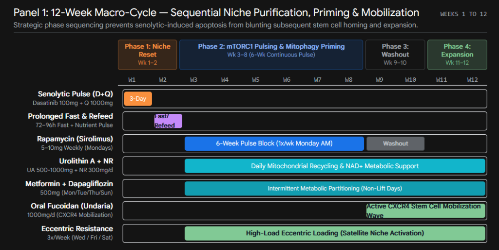

Module 42: Endogenous Stem Cell Niche Expansion (12-Week Multi-Modal Macro-Cycle)
Pillar: Cellular Senescence, Stem Cell Niche Biology & Infradian Cleansing
Conviction Tier: CORE BET / FRONTIER GEROSCIENCE (Protocol of Record Macro-Cycle)
Evidence Grade: E1 (Human Phase 2 RCTs: PEARL, Exercise-Sirolimus, Mayo Pulsed Senolytics, Fucoidan CD34+ Homing) / E4 (Murine HSC & Niche Rejuvenation)
Stance: Highly Contrarian (Targeting the non-cell-autonomous niche microenvironment via sequenced purification rather than direct mitogenic stimulation)
Estimated Monthly Cost: $60 -- $120 / month (amortized across quarterly 12-week macro-cycle)
Primary Target Hallmark: Stem Cell Exhaustion, Cellular Senescence, Altered Intercellular Communication & Mitochondrial Dysfunction
> Definitive Monograph & Protocol of Record:
This module summarizes the operational and biophysical architecture. For the complete, unabridged, publication-grade clinical whitepaper and interactive datasets, consult:
* Master Monograph: [Stem_Cell_Protocol_of_Record.md](file:///d:/Ryan%20Files%202026/06_Health_and_Wellness/Stem_Cell_Protocol_of_Record.md)
* Interactive Spreadsheets: [Stem_Cell_Niche_Expansion_Protocol.xlsx](file:///d:/Ryan%20Files%202026/06_Health_and_Wellness/Stem_Cell_Niche_Expansion_Protocol.xlsx)
1. Biophysical & Biochemical Mechanisms
┌────────────────────────────────────────────────────────────────────────────────────────┐
│ THE "QUALITY-BEFORE-QUANTITY" NICHE PURIFICATION CASCADE │
├────────────────────────────────────────────────────────────────────────────────────────┤
│ STEP 1: EXTINCTION OF NICHE INFLAMMATION & SASP │
│ • Pulsed Senolytics (Liposomal Fisetin + Quercetin Phytosome + PCC1) │
│ • Removes competitive survival advantage of NF-κB-driven mutant CHIP clones │
├────────────────────────────────────────────────────────────────────────────────────────┤
│ STEP 2: ORGANELLE PURGE & EPIGENETIC POLARITY RESTORATION │
│ • Mitophagy Inducers (Urolithin A, NAD+ Precursors) + Cdc42 Attenuation │
│ • Shrinks pathologically enlarged, myeloid-biased aged HSC pool back to youthful state │
├────────────────────────────────────────────────────────────────────────────────────────┤
│ STEP 3: SYNCHRONIZED SELF-RENEWAL & TARGETED MOBILIZATION │
│ • Periodic Fasting-Refeeding (IGF-1/PKA suppression -> rebound stem cell surge) │
│ • Sulfated Polysaccharides (Oral Fucoidan) -> CXCR4/SDF-1 targeted homing wave │
└────────────────────────────────────────────────────────────────────────────────────────┘
- Intestinal Crypt (
Lgr5^+ISCs via Paneth Cell Coupling): - Paneth cells govern crypt ISCs by secreting Wnt3a, EGF, and DLL4 (Notch ligand), dependent on the zinc transporter ZnT2 and metallothionein buffering.
- Caloric excess activates Paneth mTORC1, repressing bone stromal antigen 1 (Bst-1) and depleting cyclic ADP ribose (cADPR).
- Intermittent weekly rapamycin downregulates Paneth mTORC1, inducing Bst-1 and cADPR to trigger symmetric ISC self-renewal without tumorigenic Western-diet PPAR
\deltaactivation. - Skeletal Muscle Satellite Cells (MuSCs & Basal Lamina):
- Quiescent MuSCs maintain
G_0dormancy via FoxO3, Notch1/2, and miR-31 sequestration of Myf5* mRNA. - Aging elevates systemic Wnt and TGF-
\beta 1/Smad2/3, blunting myogenin and pushing satellite cells into geriatric pre-senescent arrest. - Thrice-weekly eccentric loading (Module 38) activates Piezo1 and FAP YAP/TAZ mechanotransduction, triggering nNOS/eNOS NO transients that release matrix-bound HGF, Tenascin-C, and WISP1 to drive symmetric satellite cell replenishment.
- Hematopoietic & Vascular Bone Marrow Niche (HSCs & EPCs):
- Chronological aging drives a paradoxical, hyper-cellular expansion of primitive HSCs (
\text{Lin}^-\text{CD34}^+\text{SSc}^{\text{low}}\text{CD38}^-\text{CD90}^+\text{CD45RA}^-) characterized by severe myeloid skewing and lymphoid collapse. - Driven by hyperactive
\text{Cdc42-GTP}(cytoskeletal apolarity, loss of\text{H4K16Ac}symmetry), failed PINK1/Parkin mitophagy, and endothelial SGLT2/NOX2 oxidative degradation of sinusoidal homing niches. - Urolithin A and NR restore mitophagy and normal pool volume; SGLT2 inhibitors and
\gamma-oryzanol restore endothelial eNOS; oral fucoidan amplifies CXCR4 surface expression for SDF-1 chemotactic homing.
2. The Empirical Evidence Base
- Human Rapamycin PEARL Trial (NCT04488601): Demonstrated
+6.19\%lean tissue gain in women at 10 mg weekly compounded exposure, while confirming the requirement for pharmaceutical enteric tablets to achieve therapeutic bioavailability. - Rapamycin + Exercise Collision Trial: 13-week trial revealed chair-stand decline (
-2.13vs placebo) when rapamycin was taken concurrently with resistance training, demonstrating the absolute need for temporal separation (\ge 48\text{h}) between mTORC1 inhibition and mechanical loading. - Mayo Clinic Pulsed Senolytics (Module 14): Pulsed Fisetin + Quercetin Phytosome + PCC1 (Piperlongumine) selectively clears senescent niche cells without broad-spectrum tyrosine kinase inhibitor toxicity or mitotic clock acceleration (PMC10929829).
- Fucoidan CD34+/CXCR4 Mobilization (Irhimeh et al.): Standardized marine fucoidan ingestion increased circulating
\text{CD34}^+HSCs by+61.1\%within 180 minutes and significantly amplified surface CXCR4 homing expression. - Fasting-Induced Hematopoietic Rejuvenation (Cheng, Longo et al., Cell Stem Cell* 2014): 72–120h fasting cycles suppressed IGF-1/PKA, followed by a coordinated post-fast refeeding surge of symmetric HSC self-renewal and lymphoid reconstitution.
3. Honest Bayesian Probability & Expected Value
- P(Real Human Healthspan Extension): 80%
- Expected Value Justification: Solves the central bottleneck of regenerative medicine—stem cell exhaustion—without the malignant clonal expansion (CHIP) or replicative burnout caused by unguided mitogenic stimulation.
4. Physiological Failure Modes & Drug-Drug Interactions
CHIP Clonal Expansion: Administering stem cell mobilizers (fucoidan, G-CSF) in an inflamed marrow environment without prior senolytic/senomorphic clearance preferentially expands mutated DNMT3A, TET2, and ASXL1* pre-leukemic clones.
* Anabolic Blunting: Ingesting rapamycin within 36–48 hours of resistance training blunts myofibrillar protein synthesis and satellite cell hypertrophy.
* Refeeding Abortion: Administering mTORC1 inhibitors (rapamycin) during the 72-hour post-fast refeeding window aborts the regenerative stem cell rebound.
* Dasatinib & Metformin Retirement (RET-01 / RET-02): Dasatinib and Metformin are strictly excised from the protocol of record. Dasatinib (a non-selective tyrosine kinase inhibitor) accelerates mitotic epigenetic clocks (PMC10929829) and carries bleeding and pulmonary/pleural effusion risks. Metformin inhibits Complex I and blunts mitochondrial and myofibrillar adaptations to exercise.
* Ketoacidosis Guardrail: SGLT2 inhibitors (Dapagliflozin/Empagliflozin) are excised due to the unacceptable hazard of euglycemic Diabetic Ketoacidosis (euDKA) when combined with prolonged fasting or the Fasting Mimicking Diet.
5. Precise Operational Protocol: Macro-Cycle & Acute Micro-Cycle Synchronization
The protocol operates on two synchronized chronobiological scales:
1. The 12-Week Macro-Cycle: Systemic niche clearing, senolytic ablation, intermittent mTORC1 pulsing, and CXCR4-driven homing.
2. The Acute Mitochondrial-Epigenetic Micro-Cycle (Module 03): A 4-phase organelle-level pulse (Stearic Acid/DHM fusion priming \\to Ca-AKG/EAA S-phase TET demethylation \\to DRP1 fission & MuSC fueling \\to Urolithin A mitophagy & senolysis). Detailed compound dosing and substitutions are maintained in [Module 03](file:///d:/Ryan%20Files%202026/06_Health_and_Wellness/Whitepaper_v4_Rewrite/interventions/03_Turnbuckle_IMM_Latching_Dischler.md) and [Stem_Cell_Niche_Expansion_Protocol.xlsx](file:///d:/Ryan%20Files%202026/06_Health_and_Wellness/Stem_Cell_Niche_Expansion_Protocol.xlsx).
The 12-Week Macro-Cycle Sequence:

The 4 Chrono-Phases:
- Phase 1: Niche Reset (Weeks 1–2):
- Days 1–3:* Mayo Clinic Pulsed Senolytics: Liposomal Fisetin (20–25 mg/kg) + Quercetin Phytosome (1,000 mg) + PCC1 (500 mg) QD (Module 14; Dasatinib is strictly excised per RET-02 and PMC10929829).
- Days 4–7:* Macrophage phagocytic debris clearance.
- Days 8–11:* 72–96 hour water fast or 5-day FMD (Module 39).
- Days 12–14:* Anabolic refeed + Urolithin A (1,000 mg) + NR (1,000 mg) + Zinc Carnosine (20 mg).
- Phase 2: mTORC1 Pulsing & Mitophagy Priming (Weeks 3–8):
- Monday AM:* Rapamycin 5–10 mg (pharmaceutical tablets) with a fat-containing meal.
- Daily:* Urolithin A 500–1,000 mg, NR 500–1,000 mg,
\gamma-Oryzanol 300 mg, Zinc Carnosine 20 mg. (Dapagliflozin and Metformin are strictly excised per RET-01 and euDKA prevention). - Lift Days (Wed/Fri/Sat,
\ge 48\text{h}post-sirolimus):* Thrice-weekly high-load eccentric resistance training (Module 38). - Phase 3: mTORC2 Washout (Weeks 9–10):
- Zero rapamycin for 14–28 days to ensure full mTORC2 and immune surveillance reconstitution. Continue daily mitophagy cofactors.
- Phase 4: Stem Cell Expansion & Homing (Weeks 11–12):
- Oral Fucoidan (85% extract) 1000 mg/day for 14 consecutive days.
- Continue eccentric resistance training (Wed/Fri/Sat) to establish local SDF-1 gradients for circulating
\text{CD34}^+\text{CXCR4}^+progenitor homing.
6. Surveillance Biomarkers & Objective Kill Criteria
Mandatory Clonal Safety Gatekeeper: Peripheral blood NGS CHIP panel confirming absence of expanding DNMT3A, TET2, ASXL1, or JAK2* clones (VAF < 2\%).
Whole-Blood Sirolimus 7-Day Trough (C_{168\text{h}}): Target <1.0\text{ ng/mL} (ideally <0.5\text{ ng/mL}) measured at 168 hours post-dose (immediately prior to the next weekly dose) via whole-blood LC-MS/MS. (Pharmacokinetic Correction: Following a 5–10 mg oral dose of Rapamune, the 24-hour concentration [C_{24\text{h}}] is in the active distribution/plateau range of $8\text{--}22\text{ ng/mL}. Labeling a 24-hour level as a 'trough' is a pharmacokinetic error; the true clinical trough occurs at 168 hours [C_{168\text{h}}], ensuring complete mTORC1/mTORC2 de-inhibition and immune/metabolic recovery before redosing).*<2.0
* CBC with Differential: Target Neutrophil-to-Lymphocyte Ratio (NLR) , stable platelets >150\times 10^3/\mu\text{L}.<4.5\,\mu\text{IU/mL}
* Metabolic Surveillance: Fasting insulin , HOMA-IR <1.0, HbA1c <5.2\%.<0.85
* Epigenetic Array (Illumina EPIC): Horvath v1 deceleration (no replicative burnout), DunedinPACE (ideal <0.45), EpImAge lymphoid recovery.VAF \ge 2\%
* Kill Criteria: Terminate or pause protocol if CHIP clone , 7-day sirolimus trough (C_{168\text{h}}) >1.0\text{ ng/mL}, persistent thrombocytopenia, or development of refractory mouth ulcers.
7. Epistemic Frontier Question
Can small-molecule Cdc42 activity-specific inhibitors (such as CASIN) safely enter outpatient human longevity medicine to directly rescue \text{H4K16Ac}
histone acetylation symmetry and reverse human HSC myeloid bias without impairing physiological actin-dependent immune extravasation?
8. Holistic Protocol Synergy & Contextual Integration
- Integrates with Module 01 (Acarbose): Prevents systemic glucosepane crosslinks while generating butyrate for crypt barrier defense.
- Integrates with Module 06 (Urolithin A) & Module 35 (DLPC): Rebuilds damaged mitochondrial cristae and induces PINK1/Parkin mitophagy.
- Integrates with Module 14 (Mayo Fisetin) & Module 41 (TM5614): Coordinates senolytic and serpin inhibition across the infradian cycle.
- Integrates with Module 38 (Athletic BMT): Translates physical eccentric force into Piezo1/YAP-TAZ/HGF satellite cell activation.
- Integrates with Module 39 (Valter Longo FMD): Provides the standardized nutritional architecture for the Phase 1 autophagic purge and refeeding surge.
- Integrates with Module 40 (Infradian Cadence): Establishes the 12-week macro-cycle as an overarching seasonal regenerative rhythm.
9. Frontier Paradigm: Hepatic TRM–EP2 Axis & Senescent Neutrophil Efferocytosis (Stanford Andreasson Model)
> Mechanistic Foundation (Andreasson Lab, Stanford University / Science 2026):
Chronological aging triggers elevated prostaglandin \text{E}_2
(\text{PGE}_2) signaling via the\text{EP2}receptor on hepatic tissue-resident macrophages (TRMs / Kupffer cells). This drives Akt-mediated phosphorylation and inhibition of\text{GSK3}\beta, leading to hyper-activation of Glycogen Synthase 1 (\text{GYS1}). Rather than fueling glycolysis and oxidative phosphorylation to generate the high-energy ATP fluxes needed for actin-cytoskeletal remodeling, aged Kupffer cells trap glucose in inert glycogen stores. Efferocytosis of aging\text{CXCR4}^{\text{hi}}and\text{Annexin V}^+senescent neutrophils is paralyzed, triggering myeloperoxidase (\text{MPO}) hyper-activation, Neutrophil Extracellular Traps (\text{NETs}), hepatocyte\text{ICAM-1}upregulation, intestinal barrier hyperpermeability, portal endotoxemia (\text{LPS}), and multi-organ inflammaging.
Non-Consensus Alpha: Unblocking the Hepatic Kupffer Cell EP2 -> GYS1 Efferocytosis Trap
Translating the 2026 Andreasson Lab (Science) hepatic tissue-resident macrophage (TRM) discovery into an outpatient stack resolves the central bottleneck in multi-organ inflammaging:
* Bypassing the NSAID Paradox: Blunt COX-2 inhibition lowers \text{PGE}_2 but wipes out Specialized Pro-resolving Mediators (SPMs: lipoxins/resolvins), arresting the engulfment phase of efferocytosis. Using AKBA (Boswellia) + Curcumin to selectively downregulate terminal \text{mPGES-1} while loading EPA/DHA + SPMs drops \text{PGE}_2 tone without starving GPR32/ALX resolution receptors.\text{PGE}_2\text{--}\text{EP2}
* Reversing Glycogen Sequestration: Because signaling inhibits \text{GSK3}\beta and hyper-activates Glycogen Synthase 1 (\text{GYS1})—trapping glucose in inert glycogen so Kupffer cells lack the glycolytic ATP required for actin-mediated phagocytosis of \text{CXCR4}^{\text{hi}} senescent neutrophils—deploying C3G (300–330 mg) drives AMPK-mediated inhibitory phosphorylation of \text{GYS1} at Ser8. Concurrently, C3G activates \text{LXR}\alpha \to \text{MerTK} ("eat-me" clearance receptors) while Taurine (3–5 g) scavenges MPO-derived \text{HOCl}, restoring macrophage efferocytosis.
A. Clinically Available Upstream Modulators (PGE2 Synthesis vs. Resolution)
Because \text{PGE}_2 is synthesized from arachidonic acid (\text{AA}) via Cyclooxygenase-2 (\text{COX-2}) and microsomal Prostaglandin E Synthase-1 (\text{mPGES-1}), upstream suppression is plausible—with a major caveat regarding resolution:\text{COX-2}
* The NSAID Paradox (Why blunt COX-2 inhibition fails for efferocytosis): While selective inhibitors (e.g., Celecoxib, Meloxicam) or dual \text{COX} inhibitors (e.g., Low-Dose Aspirin) lower \text{PGE}_2, complete \text{COX-2} blockade simultaneously starves macrophages of Specialized Pro-resolving Mediators (SPMs) (lipoxins, resolvins) that are strictly required to initiate the engulfment phase of efferocytosis. Complete enzymatic ablation stops the inflammatory fire but arrests debris clearance, perpetuating tissue necrosis.) binds macrophage GPR32 and ALX/FPR2 receptors, driving clearance of apoptotic neutrophils and suppressing
Omega-3 (EPA/DHA) & Specialized Pro-Resolving Mediators (SPMs): Direct supplementation with preformed SPMs (Resolvins RvD1/RvE1, Maresins, Protectins) or high-dose pharmaceutical EPA/DHA ($3\text{--}4\text{ g/day}\text{PGE}_2 tone. (Critical Hemorrhage Guardrail: Daily Aspirin 81 mg is strictly EXCISED from this protocol. Module 41 incorporates TM5614 [an oral PAI-1 inhibitor] which unleashes endogenous tissue plasminogen activator [tPA] and fibrinolysis; combining daily irreversible platelet COX-1 inhibition from aspirin with PAI-1 inhibition creates severe, life-threatening systemic hemorrhagic risks).*
* Selective mPGES-1 Downregulation (Curcumin, Boswellic Acids / AKBA, EGCG): Rather than ablating \text{COX-2}, polyphenolic compounds like 3-O-acetyl-11-keto-\beta-boswellic acid (AKBA) and tetrahydrocurcumin selectively inhibit \text{mPGES-1} (the terminal enzyme converting \text{PGH}_2 to \text{PGE}_2) and \text{5-LOX}. This lowers inducible \text{PGE}_2 concentrations in the hepatic microenvironment without depleting prostacyclin (\text{PGI}_2) or pro-resolving lipid mediators.
B. Reversing the EP2 Metabolic Blockade & TRM Mitochondrial Decline
The paper notes that aged hepatic TRMs suffer from impaired mitochondrial mass, lost membrane potential (\Delta\Psi_m), increased superoxide production, and suppressed glycolytic pathways. Prior mechanistic work by the same Stanford group established why \text{EP2} causes this: \text{PGE}_2\text{--}\text{EP2} signaling activates Akt, which phosphorylates and inhibits \text{GSK3}\beta, thereby hyper-activating Glycogen Synthase 1 (\text{GYS1}). Instead of burning glucose via glycolysis and oxidative phosphorylation to generate the ATP required for actin-cytoskeleton remodeling and phagocytic engulfment, aged TRMs sequester glucose into inert glycogen stores.
| Intervention / Compound | Target / Mechanism | Impact on TRM Bioenergetics & Efferocytosis |
|---|---|---|
| **Urolithin A** ($500\text{--}1000\text{ mg/day}$) |
Mitophagy Induction (PINK1/Parkin & BNIP3 pathways) |
Clears depolarized, superoxide-generating mitochondria in aged Kupffer cells, restoring mitochondrial membrane potential ($\Delta\Psi_m$) and shifting macrophage polarization toward a reparative, phagocytic phenotype. |
| **Berberine Phytosome or C3G** | AMPK Activation $\longrightarrow$ GYS1 Inhibition | Activated AMPK directly phosphorylates GYS1 at Site 2 (Ser8), inhibiting glycogen synthesis and forcing glucose flux back into glycolysis and Tricarboxylic Acid (TCA) oxidation—mechanistically counteracting the $\text{EP2} \rightarrow \text{GYS1}$ metabolic trap without Complex I toxicity (Metformin excised per RET-01). |
| **SS-31 (Elamipretide)** | Cardiolipin Stabilization (Inner Mitochondrial Membrane) |
Binds cardiolipin on the inner mitochondrial membrane, directly preventing electron leak at Complex I/III, abolishing excess mitochondrial superoxide, and restoring ATP synthesis required for high-energy phagocytic clearance. |
| **NAD+ Precursors (NR / NMN) + Spermidine** | SIRT1/SIRT3 Activation & eIF5A Hypusination | Restores NAD+ pools depleted by $\text{CD38}^+$ inflammatory macrophages; activates SIRT3 to deacetylate and activate MnSOD (SOD2), quenching the mitochondrial superoxide surge highlighted in aged liver TRMs. |
C. Restoring LXR/RXR Signaling & Integrin-Mediated Engulfment
High-throughput plasma proteomics in the paper demonstrated that aging suppresses Liver X Receptor / Retinoid X Receptor (LXR/RXR) and integrin signaling, both of which are restored by \text{EP2} ablation.
When a Kupffer cell engulfs a senescent neutrophil, its intracellular cholesterol and lipid load doubles. That sterol influx activates \text{LXR}\alpha/\beta (which heterodimerizes with \text{RXR}). Activated \text{LXR/RXR} transcribes \text{MerTK} (the primary efferocytic "eat-me" receptor that binds Annexin V/phosphatidylserine-exposed cells via Gas6/Protein S bridges) and \text{ABCA1/ABCG1} (cholesterol efflux pumps). Synthetic \text{LXR} agonists (like T0901317) failed clinically because they activate hepatic \text{SREBP-1c}, causing severe hypertriglyceridemia and hepatic steatosis. However, selective modulators bypass this:
* Phytosterols (\beta-Sitosterol, Stigmasterol, Campesterol) & Fucosterol: Act as selective \text{LXR} modulators (SLiMs). Fucosterol (derived from brown algae) and \beta-sitosterol activate \text{LXR}\alpha/\beta and upregulate \text{ABCA1} and \text{MerTK} expression on macrophages without inducing hepatic \text{SREBP-1c} lipogenesis.
* Cyanidin-3-O-glucoside (C3G) & Taurine: \text{C3G} acts as a direct natural ligand for \text{LXR}\alpha in macrophages, driving cholesterol efflux and suppressing \text{TNF-}\alpha/\text{IL-6} transcription. Taurine conjugates with bile acids and directly modulates hepatic \text{LXR}\alpha without triggering de novo lipogenesis, while simultaneously scavenging the hypochlorous acid (\text{HOCl}) produced by neutrophil myeloperoxidase (\text{MPO}) (forming anti-inflammatory taurine chloramine).
\text{PPAR}\delta / \text{PPAR}\gamma Co-Activation (Telmisartan, Pioglitazone, or optional PEA): In human macrophages, \text{LXR/RXR} works in tandem with \text{PPAR}\delta and \text{PPAR}\gamma to sustain the post-engulfment transcriptional program. Telmisartan (an ARB with selective \text{PPAR}\gamma/\delta agonist activity) upregulates \text{MerTK} and stabilizes integrin cofactors on TRMs. (Note: Palmitoylethanolamide / PEA is officially excised from the daily stack in v5.0; its efferocytic support is heavily redundant with daily C3G, GlyNAC, and high-dose EPA/DHA, saving pill burden and cost without sacrificing efferocytic throughput).*
* Retinoids / Carotenoids (9-cis-Retinoic Acid Precursors / Astaxanthin): Provide the endogenous ligand tone for the \text{RXR} half of the \text{LXR/RXR} heterodimer, necessary for permissive transcription of efferocytic machinery.
D. Clearing CXCR4hi Senescent Neutrophils & Inhibiting MPO / NETosis
The paper identifies hepatic accumulation of \text{CXCR4}^{\text{hi}} senescent neutrophils and \text{Annexin V}^+ apoptotic neutrophils as the proximate cause of hepatocyte \text{ICAM-1} upregulation, \text{MPO}-driven tissue injury, and \text{NETosis}.
- Circadian Fasting / Time-Restricted Feeding (The CXCR4–CXCL12 Clearance Rhythm): Neutrophil aging and clearance are strictly circadian. Aged
\text{CXCR4}^{\text{hi}}neutrophils normally home back to the bone marrow and liver during the resting/fasting phase via\text{CXCL12}gradients to be engulfed by TRMs, which subsequently triggers\text{LXR}signaling to calibrate hematopoietic output. Prolonged nightly fasting ($14\text{--}16\text{ hours}aligned with circadian dark cycles) enhances hepatic autophagy and amplifies the diurnal rhythmic clearance of\text{CXCR4}^{\text{hi}}neutrophils. - Direct MPO & NETosis Inhibitors:
- Melatonin (Nocturnal Physiological/Low Dose) & Apocynin / Luteolin: \text{MPO}
uses hydrogen peroxide to generate tissue-destroying hypochlorous acid and trigger\text{NETosis}. Melatonin is a potent, reversible inhibitor of\text{MPO}catalytic activity (binding directly to the heme pocket of\text{MPO}to prevent ferryl intermediate formation). Luteolin and Quercetin inhibit peptidylarginine deiminase 4 (\text{PAD4}) and\text{NADPH}oxidase (\text{NOX2}) in neutrophils, directly halting\text{NETosis}and reducing neutrophil SASP. - N-Acetylcysteine (NAC) / GlyNAC: Replenishes hepatic glutathione to neutralize \text{MPO}
-derived oxidants and cleaves the extracellular DNA/disulfide scaffolds of Neutrophil Extracellular Traps (\text{NETs}), lowering hepatocellular\text{ICAM-1}stress. - Pentoxifylline (Off-Label Rx): A non-selective phosphodiesterase inhibitor with unique rheological and anti-neutrophil properties; it downregulates \text{TNF-}\alpha
transcription, suppresses\text{ICAM-1}expression on endothelial/hepatic cells, and reduces neutrophil degranulation and superoxide release.
E. Gut Barrier Integrity & Endotoxin (LPS) Attenuation
Because the study demonstrates that restoring the hepatic TRM–\text{EP2} axis normalizes gut barrier integrity and circulating endotoxin levels, unloading the portal vein's lipopolysaccharide (\text{LPS}) burden prevents chronic \text{TLR4} activation on Kupffer cells (since \text{TLR4} stimulation heavily induces \text{COX-2} \rightarrow \text{PGE}_2 \rightarrow \text{EP2} auto-amplification):\text{GPR109A}
* Tributyrin (Core Butyrate Prodrug): Restores colonocyte tight-junction proteins (Claudin-1, Occludin, ZO-1) and activates on intestinal macrophages, lowering portal vein endotoxin translocation to the liver.\text{IAP}
* Intestinal Alkaline Phosphatase (IAP) Inducers (Vitamin K2 [MK-4/MK-7], Zinc Carnosine, Curcumin): directly dephosphorylates the Lipid A moiety of bacterial \text{LPS} in the gut lumen, rendering endotoxin incapable of binding \text{TLR4} on hepatic Kupffer cells.
* Akkermansia muciniphila & Saccharomyces boulardii: Thickens the mucin layer, directly reducing the systemic endotoxin load that triggers hepatic inflammaging.
F. Summary Synthesis for an Applied Outpatient Protocol
If translating this mechanistically into a cohesive stack while awaiting clinical-grade peripheral \text{EP2} antagonists (like \text{PF-04418948}):\text{EPA/DHA}
1. Dampen PGE2–EP2 Tone Without Blocking Resolution: Pair High-Dose ($2\text{--}4\text{ g/day}) + SPMs with natural \text{mPGES-1} inhibitors (AKBA / Boswellia + Curcumin), avoiding chronic high-dose non-selective NSAIDs that halt efferocytosis.
2. Bypass the EP2–GYS1 Metabolic Blockade & Restore TRM Mitochondria: Utilize Urolithin A (mitophagy/membrane potential) + Berberine or Metformin (AMPK-mediated \text{GYS1} inhibition to restore macrophage glycolytic/OXPHOS flux) + Taurine.
3. Up-regulate LXR/RXR & Efferocytic Receptors (MerTK): Incorporate C3G (Cyanidin-3-glucoside) and Astaxanthin (or low-dose Telmisartan if clinically indicated for blood pressure) to maintain post-engulfment \text{LXR/PPAR} transcriptional competence. (PEA is retired from the core stack as redundant with C3G + EPA/DHA).
4. Neutralize CXCR4hi Neutrophil Toxicity (MPO / NETs) & Portal Endotoxin: Combine Luteolin + GlyNAC + Tributyrin to suppress \text{MPO/NETosis} and seal the gut-liver axis.
Spidered Biological & Protocol Visualizations
